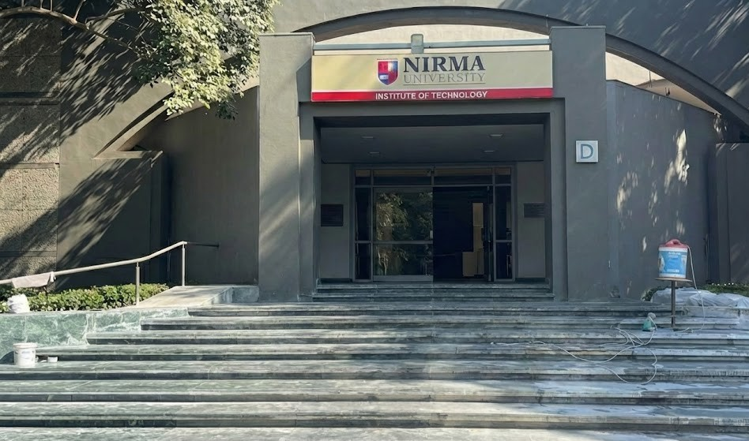

(1)Primary use:
-Academics: Classrooms and lecture halls for B.Tech, M.Tech, and Ph.D. students.
-Laboratories: Well-equipped labs for various engineering branches, especially Computer Science and IT.
-Studios & Project Work: Spaces for design projects and practical application of technical knowledge.
(2)Primary Occupants:
The School of Engineering, which includes:Mechanical Engineering,Civil Engineering,Chemical Engineering
(3)Laboratories:
It contains fundamental laboratories(like Electrical labs).
(4)Facilities & Labs:
Unlike the computer labs in N Block, D Block contains "Heavy Labs" and industrial workshops, you might find:
(i)Fluid Mechanics & Heat Transfer Labs (huge pipe networks and boilers),
(ii)Concrete Technology Labs (Civil Engineering testing areas),
(iii)Workshops: Lathe machines, carpentry, smithy, and welding stations.
"D Block" at Nirma University primarily refers to a specific building within the Institute of Technology (NIT), housing classrooms and facilities for engineering programs, known for its tech focus, labs, and being part of a larger multidisciplinary campus with institutes like Design, Management, and Law, offering a vibrant, research-oriented environment with modern amenities and a strong emphasis on holistic student development.